A live walkthrough of OliOps Suite, OliCommerce Stack, OliFlow Automation Engine, OliExplore, Oli-Locator, and OliSalesTrack — built for an owner running an ecommerce store and a marketing agency at the same time.
I want to be straight with you: this sandbox has no video-rendering tools (ffmpeg), no text-to-speech engine, and no open internet access to reach a cloud voice/render API — I checked all of that before deciding how to run this pitch.
So instead of a broken or fake video file, you're getting the honest version: a real, clickable slide deck built from live screenshots of the actual product, with a full scene-by-scene narration script — delivered to you live, in chat, in my voice as your marketing director, and captioned in the panel below each slide.
✓ A real, working slide deck (this page)
✓ Live screenshots of all 6 tools' actual landing + buy pages
✓ A complete narration script, scene-by-scene
✓ Accurate pricing pulled directly from the live buy pages
✓ Honest fit analysis for an ecommerce + agency owner specifically
| # | Tool | What it replaces | Best fit for you |
|---|---|---|---|
| 1 | OliOps Suite | CRM + invoicing + payroll + support desk | Agency back-office |
| 2 | OliCommerce Stack | Klaviyo-style cart recovery + shopping assistant | ⭐ Your ecommerce store |
| 3 | OliFlow Automation Engine | Zapier / Make / n8n | ⭐ Your agency's client ops |
| 4 | OliExplore | Repurpose.io / MeetEdgar / Buffer | ⭐ Your agency's social clients |
| 5 | Oli-Locator | Angi Leads / Thumbtack pay-per-lead | Weakest fit — I'll say why |
| 6 | OliSalesTrack | Baremetrics / Profitwell | ⭐ Your ecommerce store |
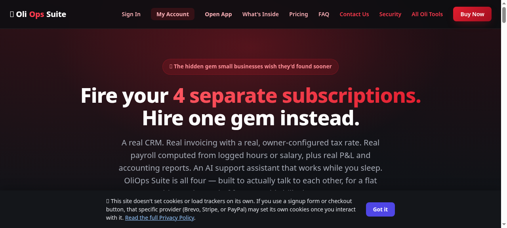
A real CRM, real invoicing with an owner-configured tax rate, real payroll computed from logged hours or salary, real P&L / expense / aged-receivables reports, and an AI support assistant that answers from a knowledge base first — with unanswered questions becoming real tickets instead of being dropped.
Honest limit: payroll computes what's owed from hours/salary — it does not handle tax withholding or filing. Pair it with a real payroll provider for that part.
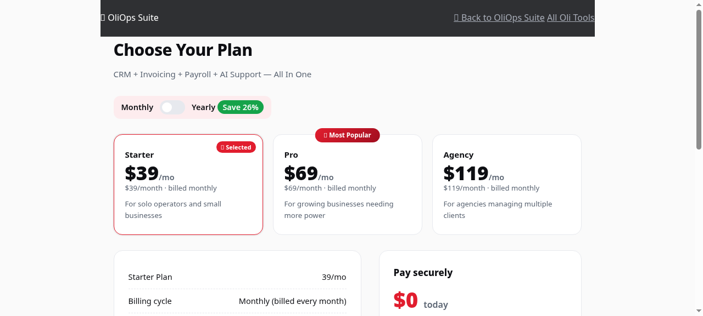
| Plan | Price | Devices |
|---|---|---|
| Starter | $39/mo · $348/yr | 5 |
| Pro | $69/mo | higher limit |
| Agency | $119/mo | highest limit |
Comparable separate stack (CRM + invoicing + payroll + AI chatbot): ~$1,740–$4,020/year. OliOps Starter: $348/year.
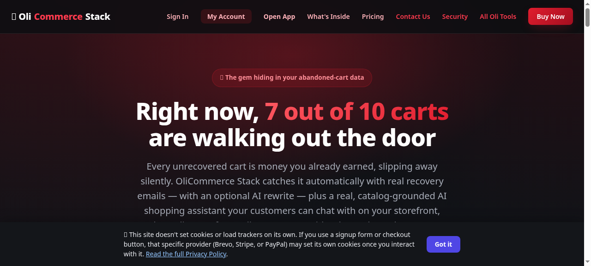
Abandoned cart recovery, an AI shopping assistant for your storefront, browse-abandonment recovery (Pro tier), an AI rewrite engine with 5 tones for recovery messaging, and flat pricing with no per-contact scaling — unlike most email tools in this category.
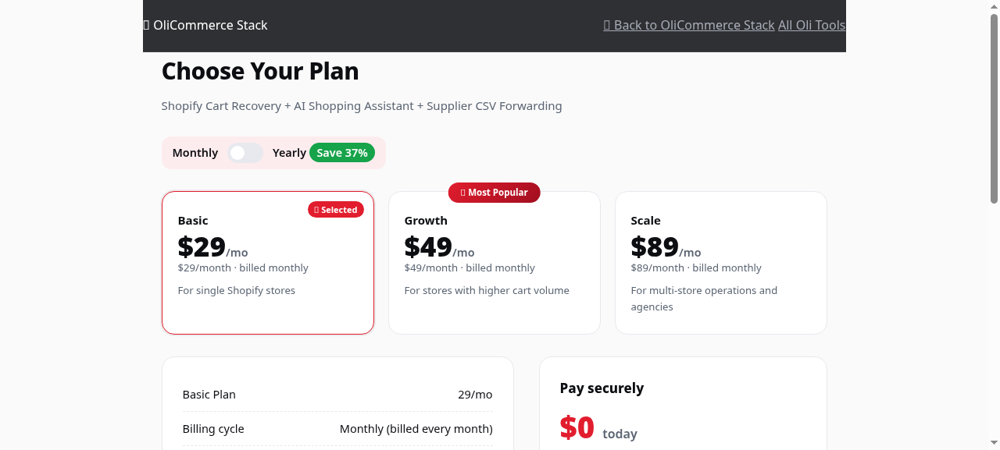
| Plan | Price |
|---|---|
| Basic | $29/mo · $264/yr |
| Higher tier | up to $59/mo |
Klaviyo starts near $20/mo but scales with your contact list — at 10K contacts that's typically $600–$1,200+/year. OliCommerce stays flat at $264/year regardless of list size.
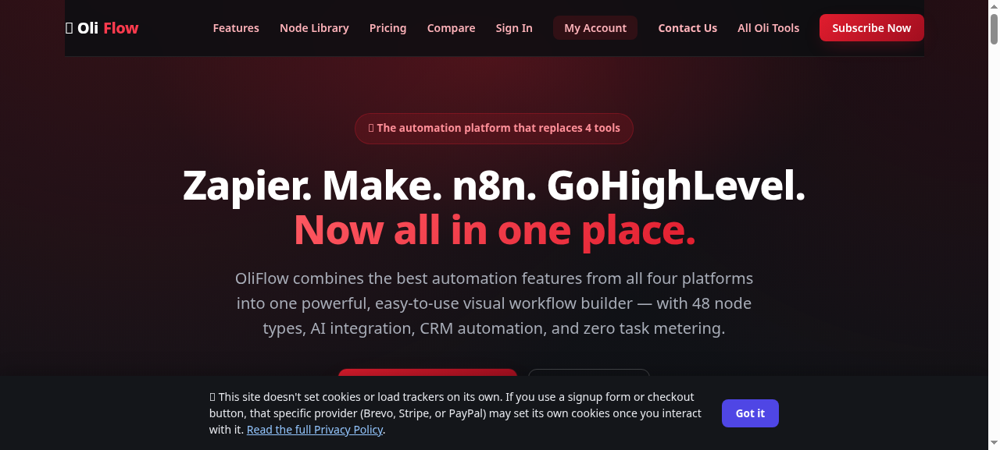
A visual workflow builder with 48 nodes, unlimited automation runs (no metering), a self-hosted option for full data control, 7 prebuilt CRM adapter templates, and documented Zapier/Make bridge support for migrating existing automations.
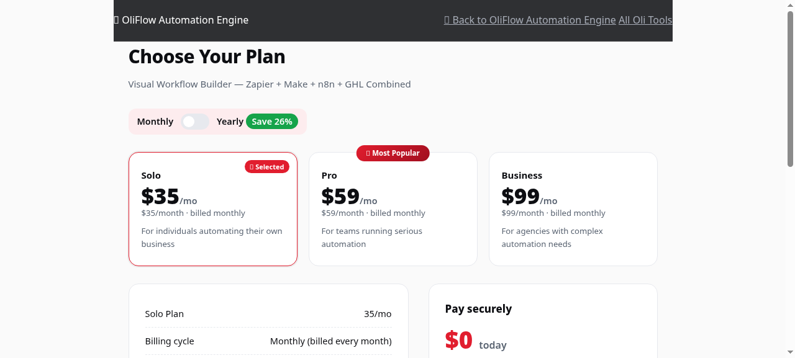
| Plan | Price |
|---|---|
| Solo | $35/mo · $312/yr |
| Higher tier | up to $99/mo |
At ~100 workflows/month: Zapier runs $200–$600+/mo, Make runs $100–$400+/mo, n8n Cloud has a $240/mo minimum. OliFlow: $35/mo flat, unlimited.
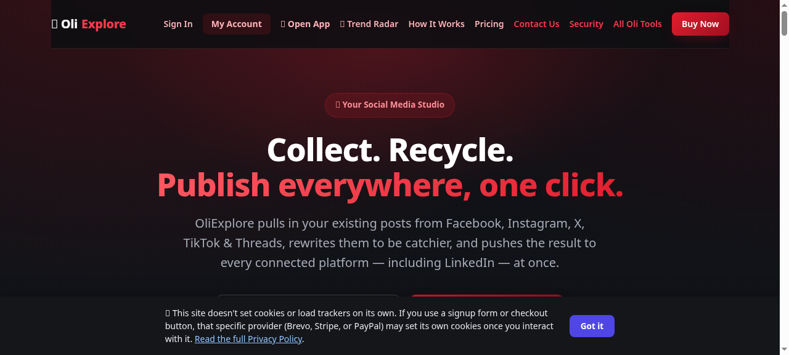
Collects your best posts from real connected accounts, rewrites them with an AI engine across 5 tones, and cross-publishes to every major platform at once. Includes 5 connected accounts on the Creator tier and a live Trend Radar feed of trending audio/formats.
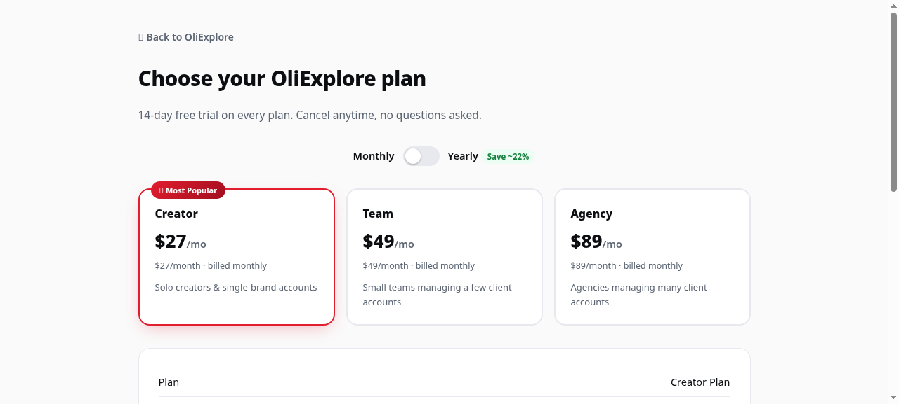
| Plan | Price | Accounts |
|---|---|---|
| Creator | $27/mo · $252/yr | 5 |
| Higher tier | up to $49/mo | more |
Repurpose.io: $35/mo, 3 accounts. MeetEdgar: $29.99/mo. OliExplore: $27/mo, 5 accounts, with AI rewriting included at every tier.
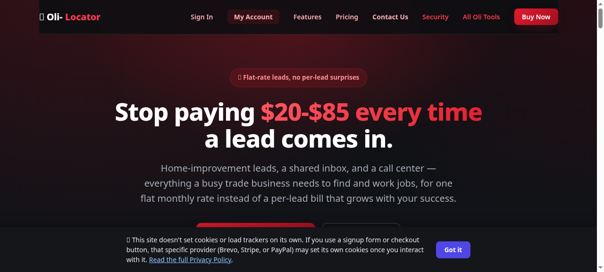
Home-improvement lead generation (cleaning, pest control, renovation, roofing, etc.) across USA/UK/Australia, with an opt-in inbox and a built-in call center/dialer — flat monthly rate instead of Angi Leads/Thumbtack's $15–$85+ per-lead fees.
Honest take: unless you or an agency client works in home-improvement lead generation, skip this one for now. I'm not going to manufacture a reason you need it.
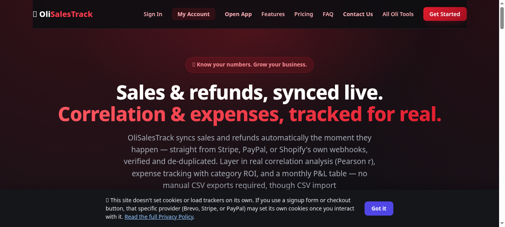
Live sync with Stripe, PayPal, Shopify, WooCommerce & Amazon. Real expense tracking. A P&L dashboard. Annual forecasting on the Pro tier. And a genuinely unique refund-to-revenue correlation analysis feature none of the mainstream competitors offer.
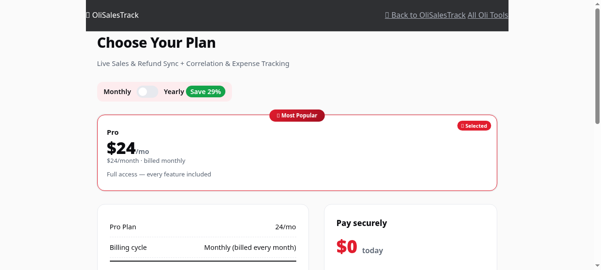
| Plan | Price |
|---|---|
| Pro (only tier) | $24/mo · $204/yr |
Baremetrics: $49+/mo, no refund correlation feature. OliSalesTrack: $24/mo, with it included.
OliCommerce Stack — stop losing carts, right now.
OliSalesTrack — see your real profit margin, not just revenue.
OliOps Suite — one back office for clients, invoicing, payroll.
OliFlow — automate client workflows without a metered bill.
OliExplore — social media management for clients.
| Tool | Monthly | Annual |
|---|---|---|
| OliCommerce Stack | $29 | $264 |
| OliSalesTrack | $24 | $204 |
| OliOps Suite (Starter) | $39 | $348 |
| OliFlow (Solo) | $35 | $312 |
| OliExplore (Creator) | $27 | $252 |
| Total | $154/mo | $1,380/yr |
For comparison: OliOps alone replaces a stack that typically runs $1,740–$4,020/year on its own. Five consolidated tools, one dashboard each, no per-seat or per-contact scaling surprises on any of them.
Every Oli repository now ships under an all-rights-reserved license — no MIT, no open redistribution. Nobody can legally copy, fork, or resell the code.
Scrypt password hashing, timing-safe session comparisons, and a manual secrets audit across every repo — with the one historical issue we found disclosed openly, not hidden.
Every tool has a working contact form routed to a real inbox. The destination address is masked in the page source (populated at runtime) specifically to block scraping — not to dodge you.
No SOC 2 claim we can't back up, no "bank-level security" filler language. Full detail at
/security/ on the live site.
Start with OliCommerce Stack + OliSalesTrack for your store, and OliFlow for your agency — the three with the fastest, most obvious payback. Every tool has a real 14-day free trial and a live Buy Now button. No lock-in, cancel anytime.